2026 / 2027
مفهوم التنمية: المقاربات والتقسيمات الكبرى للعالم
درس الجغرافيا 1التنمية مفهوم معقد تتعدد مقارباته وتتباين مستوياته من دولة إلى أخرى. والتنمية البشرية هي تحسين مستدام لشروط حياة الساكنة على جميع المستويات، وتختلف عن التنمية الاقتصادية (النمو) التي تركز على الجانب المادي وتعتبر الإنسان مجرد وسيلة للإنتاج.
ما مفهوم التنمية ومقارباتها واستراتيجياتها؟ وكيف تتفاوت مستوياتها على الصعيد العالمي؟ وما النظريات المفسّرة لهذا التفاوت؟
مقدمة
التنمية مفهوم معقد تعددت المقاربات في سبيل الإلمام به.
- فما هو مفهوم التنمية؟ وما هي مقارباتها؟
- وما هي إستراتيجياتها؟
- وكيف تتفاوت مستويات التنمية على المستوى العالمي؟
- وما هي النظريات المفسرة لتفاوت التنمية؟
تركّز التنمية البشرية على الإنسان وتجعله غايةً في حد ذاته. ولقياسها وضع خبراء برنامج الأمم المتحدة الإنمائي مؤشر التنمية البشرية (IDH) الذي يرتكز على ثلاثة معايير: المعيار الاقتصادي (نصيب الفرد من الناتج الإجمالي الخام بتعادل القوة الشرائية)، والمعيار الصحي (متوسط العمر المتوقع عند الولادة ونسبة وفيات الأطفال)، والمعيار التعليمي (نسبة التمدرس ومعدل الأمية).
ضعيف: أقل من 0.550 · متوسط: 0.550 إلى 0.699 · مرتفع: 0.700 إلى 0.799 · مرتفع جدًا: 0.800 فأكثر.
1- التنمية: مفهومها ومقارباتها
1- مفهوم التنمية
التنمية البشرية هي تحسين مستدام لشروط حياة ساكنة ما على جميع المستويات وهي تختلف عن التنمية الاقتصادية (النمو) التي تركز على الجانب الاقتصادي وتعتبر الإنسان وسيلة للإنتاج فقط.
باعتبار التنمية البشرية تركز على الإنسان وتعتبره هدفا في حد ذاته، فإن خبراء الأمم المتحدة وضعوا مقياسا للتنمية البشرية يركز على مستويات رفاهية الساكنة (مؤشر التنمية البشرية IDH) ويعتمد ثلاث معايير:
- المعيار الاقتصادي: ويركز على المستوى الاقتصادي ببلد ما من خلال مستوى الدخل الفردي مع مراعاة القدرة الشرائية للسكان.
- المعيار الصحي: ويرتكز على أمد الحياة ونسبة وفيات الأطفال.
- المعيار التعليمي: ويعتمد نسبة الأمية ونسبة التمدرس لدى الصغار والكبار.
2- إستراتيجيات التنمية
يمكن التمييز بين إستراتيجيتين تنمويتين:
- الإستراتيجية الاشتراكية: وهي إستراتيجية اعتمدتها الصين في عهد ماو والجزائر في عهد بومدين، واعتمدت هذه التجربة على الانغلاق على الذات والاهتمام بالسوق الداخلية لتحقيق الاكتفاء الذاتي وكذلك التركيز على الصناعة الثقيلة.
- الإستراتيجية الرأسمالية: وتمثلها الدول التنينات (سنغافورة - هونغ كونغ - كوريا الجنوبية)، وقد اعتمدت هذه الدول على الصناعات الاستهلاكية والانفتاح على السوق العالمية واستطاعت تحقيق نجاح اقتصادي مكنها من بلوغ التنمية.
3- المقاربات المعتمدة لتحقيق التنمية
- مقاربة اقتصادية: وتعتمد مؤشرات اقتصادية مثل الناتج الداخلي الخام والدخل الفردي ونوعية وبنية الاقتصاد.
- مقاربة اجتماعية: وتعتمد المؤشرات الاجتماعية مثل نسبة الفقر والأمية والبطالة ونسبة التأطير الطبي والبطالة والسكن.
- مقاربة ديمغرافية: وتعتمد مؤشرات ديمغرافية مثل أمد الحياة، الوفيات، الولادات، ونسبة الخصوبة طبيعة الهرم السكاني...
- مقاربة سياسية: وتعتمد مستوى الديمقراطية وحقوق الإنسان والحكامة الجيدة..
- مقاربة ثقافية-تعليمية: وتعتمد على مؤشرات ثقافية كنسبة الأمية ونسبة التمدرس، ونوعية وجودة التعليم.
- مقاربة بيئية: وتعتمد التنمية المستدامة القائمة على مراعاة البعد البيئي في المخططات.
- مقاربة سوسيو-اقتصادية: وهي تقوم على دمج المؤشرات الاقتصادية والاجتماعية والثقافية وغيرها في إطار دراسة شمولية تقترب أكثر من مفهوم التنمية البشرية.
تنقسم دول العالم من حيث مستوى التنمية إلى مجموعتين رئيسيتين متفاوتتين:
| الوجه | دول الشمال (المتقدمة) | دول الجنوب (النامية) |
|---|---|---|
| المكوّنات | أمريكا الشمالية، الاتحاد الأوروبي، اليابان، كوريا الجنوبية، أستراليا ونيوزيلندا | باقي دول إفريقيا وآسيا وأمريكا اللاتينية بمستويات متباينة |
| السكان والثروة | 20% من سكان العالم، وتهيمن على 80% من الدخل العالمي | 80% من سكان العالم مقابل 20% فقط من الثروة العالمية |
2- التقسيمات الكبرى للعالم حسب خريطة التنمية، وعوامل تباين مستويات التنمية
1- خريطة التقسيمات الكبرى للعالم
تنقسم دول العالم حسب مؤشرات التنمية إلى مجموعات وفقًا لمستويات الدخل الفردي ومؤشر التنمية البشرية (IDH). مؤشر الدخل الفردي يقيس متوسط دخل الفرد عبر الناتج المحلي الإجمالي، ويقسم الدول إلى ثلاث فئات: دول ذات دخل مرتفع مثل الولايات المتحدة وألمانيا، التي تتميز باقتصادات قوية ومستويات معيشة عالية؛ دول ذات دخل متوسط مثل الصين والهند والمغرب، التي تمر بمرحلة انتقالية؛ ودول ذات دخل منخفض مثل النيجر وأفغانستان، التي تعاني من مستويات فقر مرتفعة.
أما مؤشر التنمية البشرية (IDH)، فهو مقياس مركب يأخذ بعين الاعتبار الصحة (متوسط العمر المتوقع)، التعليم (سنوات الدراسة)، ومستوى المعيشة (الدخل). بناءً عليه، تصنف الدول إلى تنمية بشرية عالية جدًا مثل النرويج وسويسرا، تنمية بشرية عالية مثل الأرجنتين وماليزيا، تنمية بشرية متوسطة مثل مصر والمغرب، وتنمية بشرية منخفضة مثل تشاد والنيجر.
الفرق بين دول الشمال والجنوب يكمن في مستويات التنمية؛ حيث تتمتع دول الشمال مثل أوروبا وأمريكا الشمالية باقتصادات متقدمة ومستويات معيشة مرتفعة، بينما تعاني دول الجنوب مثل إفريقيا وأمريكا اللاتينية من تحديات اقتصادية واجتماعية، مما ينعكس على انخفاض مؤشرات التنمية والدخل. هذه الفوارق توضح التباين العالمي في التنمية والرفاهية بين الدول (انظر الخريطة).
2- تفسيرات التباين في مستويات التنمية
تختلف النظريات المفسرة لتفاوت مستويات التنمية بين بلدان العالم فهناك:
- تفسير على أساس طبيعي: يعتمد موقع ومناخ كل مجموعة ويرى بأن الدول الفقيرة تقع في الجزء الجنوبي الحار من الكوكب، عكس دول الشمال المعتدلة.
- تفسير اقتصادي وإيديولوجي، وينقسم هذا التفسير إلى وجهتي نظر: وجهة نظر ليبرالية: وترجع التخلف لأسباب داخلية كضعف الادخار والاستثمار. ووجهة نظر ماركسية: وترى بأن تخلف الجنوب يرجع لأسباب خارجية مرتبطة بالاستعمار والتبعية الاقتصادية.
- تفسير جغرافي: وهو تفسير أكثر شمولية يرى بأن التنمية ظاهرة معقدة وبالتالي يجب تضافر كل التفسيرات السابقة للوقوف على أسباب التخلف.
أربعة مفاهيم متدرجة تبيّن كيف اتسع معنى التنمية من «كم ننتج؟» إلى «كيف نعيش؟ وكيف نحافظ على حق الأجيال القادمة؟»:
- عملية تغيير جذري وشامل يمس البنيات الاقتصادية والاجتماعية والثقافية، بهدف الرقي بمستوى معيشة السكان وضمان رفاهيتهم.
- الشمولية: لا تقتصر على جانب واحد بل تشمل كل أبعاد حياة الإنسان.
- الهدف: الانتقال من حالة التخلف إلى حالة التقدم.
- التنمية ≠ النمو: النمو زيادة كمية في الإنتاج، والتنمية تطور نوعي في الحياة.
- التطور الذي يطرأ على حجم الإنتاج والخدمات في القطاعات الثلاثة (الفلاحة، الصناعة، التجارة).
- الناتج الداخلي الخام (PIB): القيمة المالية الإجمالية للسلع والخدمات المنتجة داخل بلد ما خلال سنة.
- الدخل الفردي: نصيب الفرد من الناتج الداخلي الخام.
- تركز على «القوة المادية» للدولة.
- مقاربة تجعل من الإنسان أداة للتنمية وهدفًا نهائيًا لها، من خلال توسيع خياراته وقدراته.
- تقاس بمؤشر التنمية البشرية (IDH) المركّب من: أمد الحياة (الصحة والرعاية الطبية)، مستوى التعليم (الأمية والتمدرس)، الدخل الفردي (القدرة الشرائية ومستوى المعيشة).
- تنمية تلبي احتياجات الحاضر دون المساومة على قدرة الأجيال المقبلة على تلبية احتياجاتها الخاصة.
- النجاعة الاقتصادية: خلق الثروة بشكل مسؤول.
- العدالة الاجتماعية: توزيع الثروة وإنصاف الفئات الفقيرة.
- الحماية البيئية: الحفاظ على الموارد الطبيعية وتجنب التلوث.
| المرحلة | البعد المهيمن | مضمونه |
|---|---|---|
| الخمسينيات والستينيات | البعد الاقتصادي | التركيز على التصنيع وزيادة الإنتاج |
| السبعينيات | البعد الاجتماعي | الاهتمام بمحاربة الفقر وتوفير الحاجات الأساسية |
| 1990 | التنمية البشرية | اعتماد مؤشر IDH من طرف الأمم المتحدة |
| 1992 | التنمية المستدامة | قمة الأرض بريو دي جانيرو تكرّس إدخال البعد البيئي |
ينقسم عالمنا المعاصر وفق معايير اقتصادية واجتماعية وجغرافية، تهدف جميعها إلى فهم الفوارق بين الدول ومستويات معيشة شعوبها:
- معيار مالي بحت: نصيب الفرد من الدخل القومي الإجمالي (GNI)، وفق تصنيف البنك الدولي.
- دخل مرتفع: «نادي الأغنياء» بفوائض مالية ضخمة (الولايات المتحدة، قطر).
- دخل متوسط: دول نامية تشهد تحولًا صناعيًا (الصين، مصر).
- دخل منخفض: ضعف الموارد والفقر (اليمن، أفغانستان).
- أكثر إنسانية: لا ينظر إلى «كم يملك الفرد» بل إلى «كيف يعيش الفرد» (الصحة، التعليم، مستوى المعيشة).
- تنمية مرتفعة جدًا: رفاهية متكاملة (سويسرا، النرويج).
- تنمية مرتفعة/متوسطة: شوط مقطوع في تحسين المدارس والمستشفيات (السعودية، الجزائر).
- تنمية منخفضة: نقص الخدمات الأساسية والأمية (النيجر، تشاد).
- الشمال: قوة تكنولوجية، استقرار سياسي، تحكم في التجارة العالمية (أوروبا الغربية، كندا، اليابان)؛ وتنتمي إليه أستراليا ونيوزيلندا اقتصاديًا.
- الجنوب: وفرة في المواد الخام، نمو سكاني كبير، وتحديات في اللحاق بالركب التكنولوجي (البرازيل، الهند، نيجيريا).
- الدخل يقيس «المال» فقط، والتنمية تقيس «جودة الحياة»، والشمال/الجنوب يقسم العالم إلى «مركز» متطور و«أطراف» نامية.
بطاقات الأستاذ المصوّرة تلخّص الدرس من المفهوم إلى حالة المغرب؛ تصلح للمراجعة السريعة قبل الفرض:
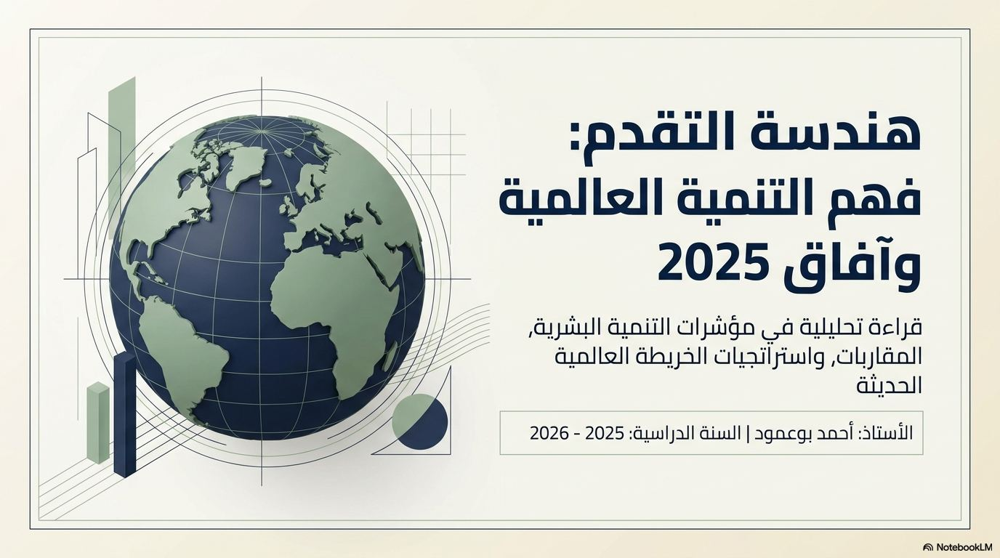

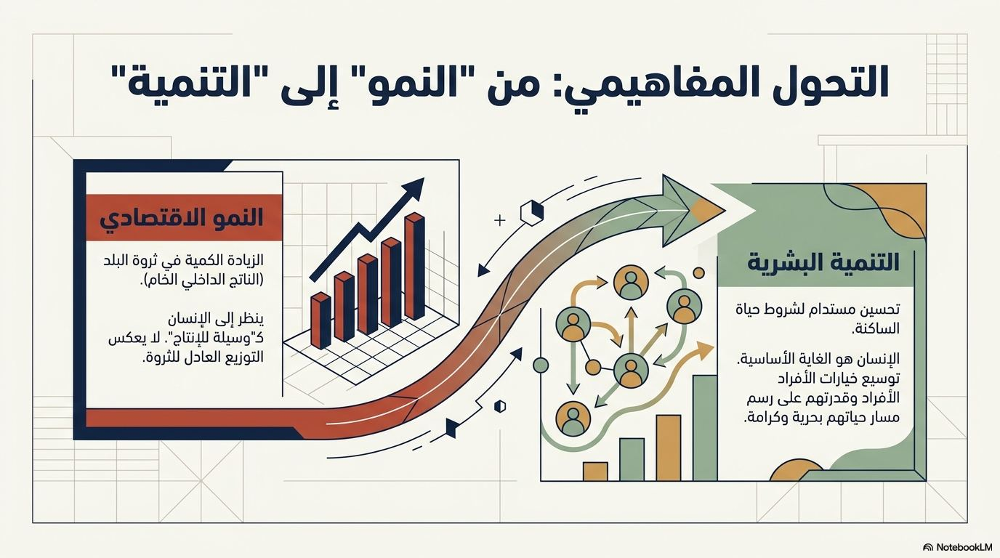

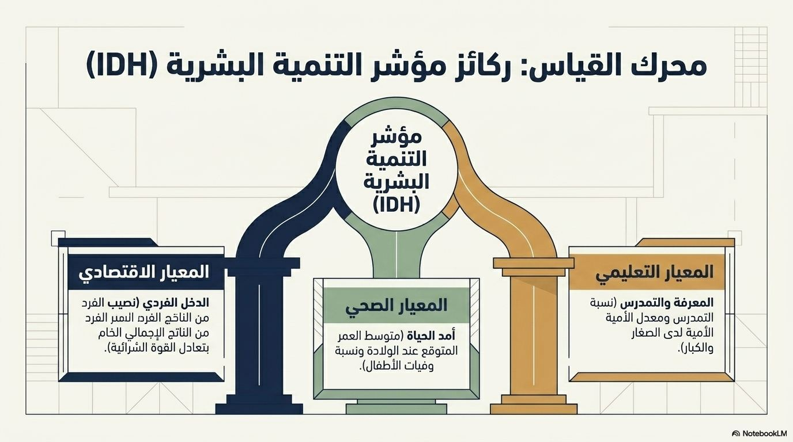

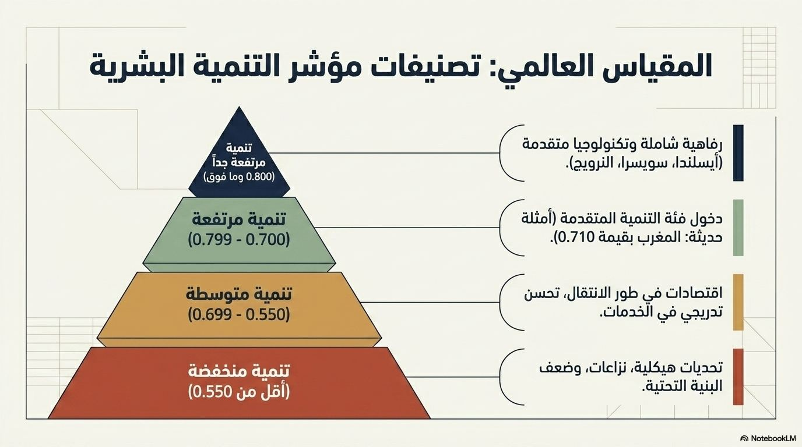

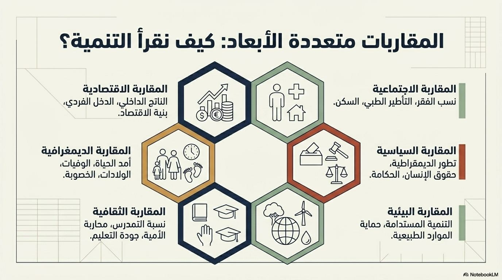

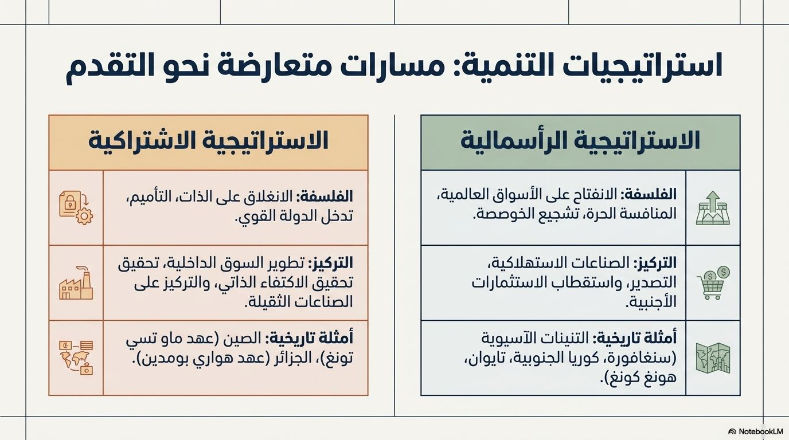

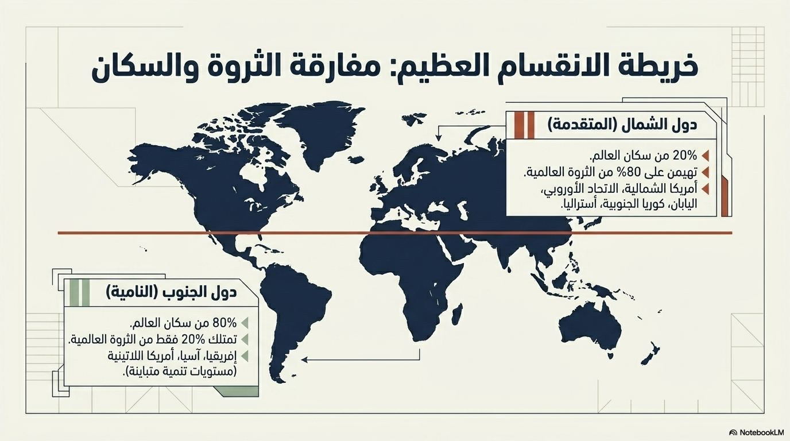

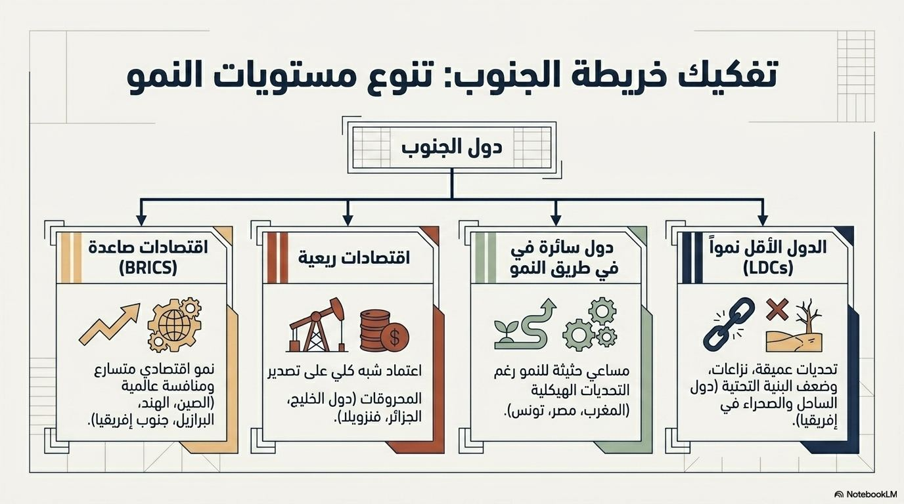

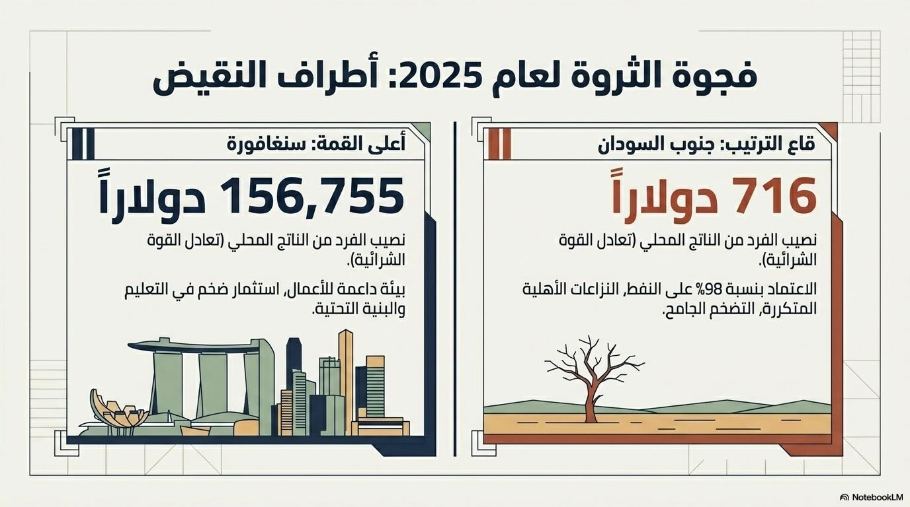

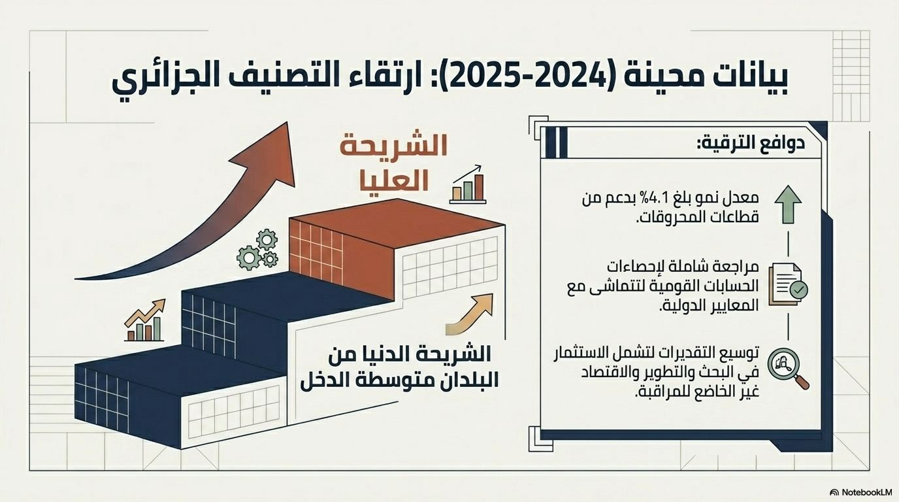

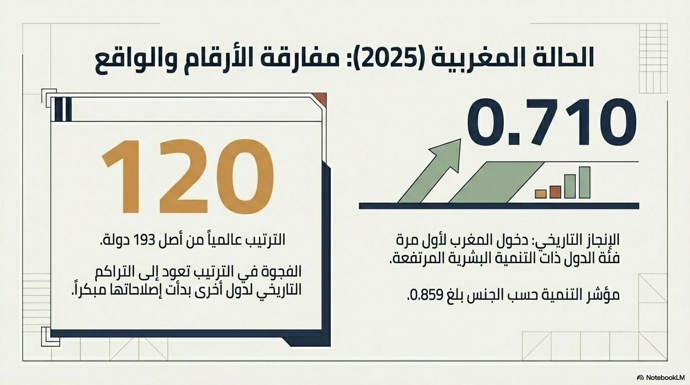

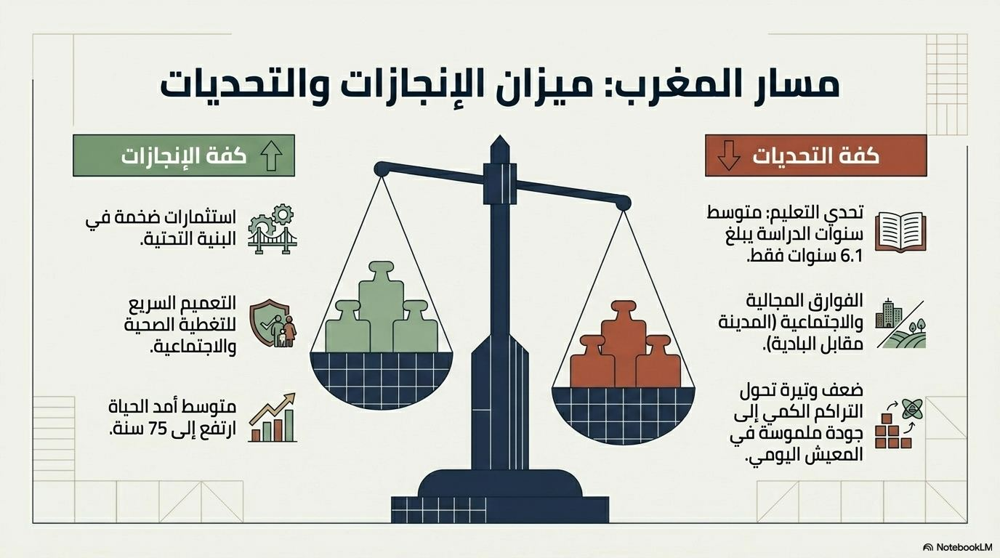

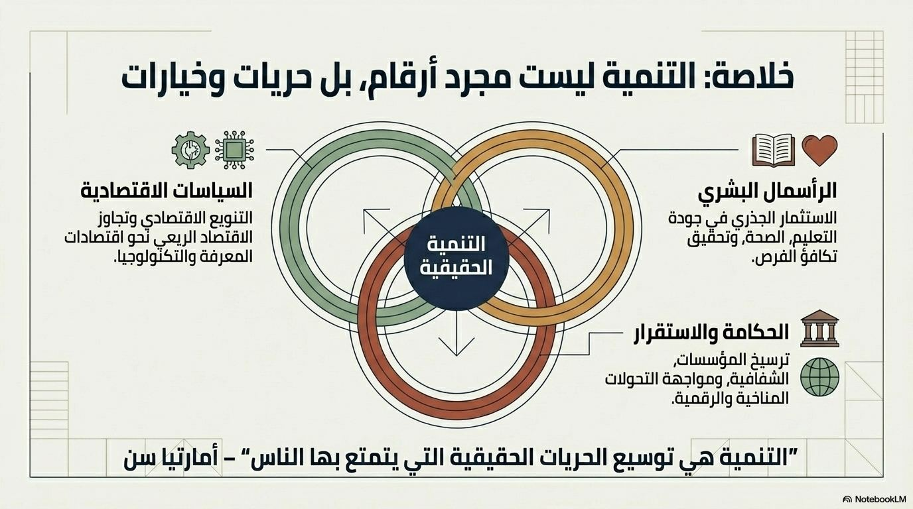

موارد مكمّلة من ملفات الأستاذ؛ للتحميل أو الفتح من درايف:
يتفاوت مستوى التنمية البشرية بين دول الشمال ودول الجنوب تفاوتًا حادًا لا يمكن ردّه إلى عامل واحد. ويبقى التحدي الأكبر أمام الأسرة الدولية سدّ الهوة التنموية عبر سياسات تنمية منصفة ومستدامة تضع الإنسان في مركز الاهتمام.
خاتمة
يتفاوت مستوى التنمية البشرية بين دول الشمال ودول الجنوب، التي عليها بذل المزيد من الجهود من أجل تحقيق رفاهية شعوبها.